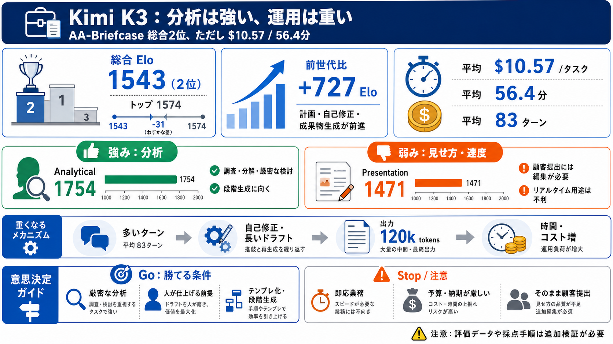

Kimi K3: second only to Fable 5 on AA-Briefcase
[](https://artificialanalysis.ai/login)K. [](https://artificialanalysis.ai/login)K. Tasks require deliverables such as s…

[](https://artificialanalysis.ai/login)K. [](https://artificialanalysis.ai/login)K. Tasks require deliverables such as s…
Its intelligence is comparable to Opus 4.8 and GPT-5.5 but remains behind Fable 5 and GPT-5.6 Sol. Moonshot AI has expre…
# Kimi K3 vs Claude Fable 5: Complete Analysis. Kimi K3 vs Claude Fable 5 across 35 benchmarks, pricing, architecture, c…
## Data Science in Your Pocket. # Kimi K3 vs Claude Fable 5. ## Claude Fable 5 vs Kimi K3. This is the comparison the be…
Kimi K3 is ~1/3 the price of Fable 5 and beating it on some benchmarks. pricing: kimi k3 — $3 / $15 gpt-5.6 sol — $5 / $…